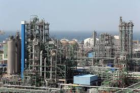

HARK Petroleum
The HARK group of companies is owned by the four entreprenuer namely Aswath, Raghul, Kavin Kishore, Hari Haran .Our company owners were friends during their school days they had an business idea in that period of time. They joined the same college in coimbatore after finishing their college they have finished their higher studies. After thier higher studies they worked in other companies. Mr.Raghul who had many business startup ideas he worked as an assitant manager in many companies. Mr.Aswath he is an very intelligent person who has knowledge in various fields,At beginning he worked in IT field for few years he is an Full Stack developer this website is also build by him. Mr.Kavin Kishore is an finacial expert who been a important to this Industries in financial point of view he deals with all the finance of the company. Mr Hari Haran is one who take parts in all business activities he workes both in internal and external affairs of the business among four of them . Later in the year 2028 they attained their financial freedom .First with the small captial they started Resturant and many startups with the small and steady growth in their business and their contacts they build the College named HARK college with more an more profit in the business in the year 2034 they started an HARK group of petroleums they extract petroleum from the Arbian sea and they import petroleum from the gulf countries and finally they started an HARK IT park in Chennai our IT company is one of the top 10 IT companies in INDIA here almost 300 trained IT professionals working here .Most of the people dream company is our HARK IT park.
+91 8610160527
harkindustries.pvt@gmail.com